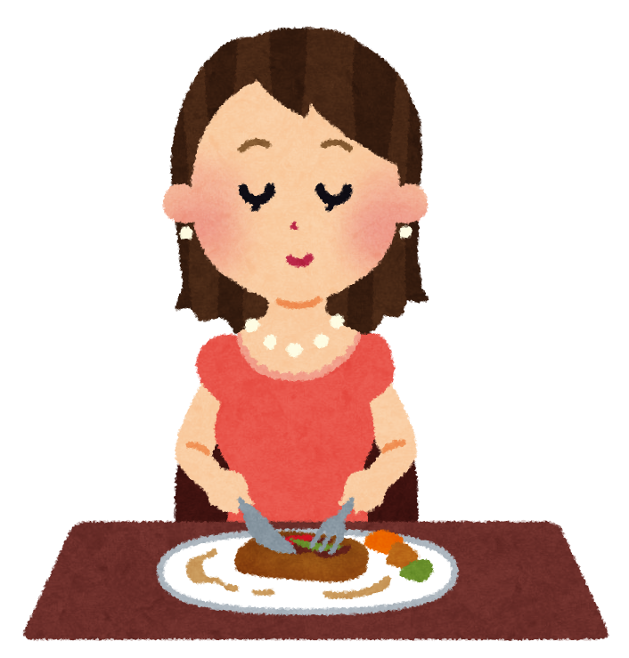

東洋ワーク株式会社
研修生一覧
挨拶について
敬語について
面接・服装について
マナーなどの確認問題
クイズ：次の中から正しい答えを選択してください
面接
問題１：面接入室時の正しいマナーを選びなさい
1,面接時の入室の流れとして正しいものを選びなさい
a,ドアを３回ノック→「どうぞお入りください」と応答があったら入室
b,ドアをノック→「どうぞお入りください」と応答がある→「失礼します」と声をかけて入室
c,ドアを３回ノック→「どうぞお入りください」と応答がある→「失礼いたします」と声を掛けて入室
2,面接室に入室した際のドアの締め方で正しいものを選びなさい
あ.面接官の方を向きながらドアを閉める。
い.ドアの方に向き直して閉める。
A,aとあ
B,bとあ
C,cとあ
D,aとい
E,bとい
F,cとい
問題２：面接官が後から入室してくる場合の待ち方で誤っているものを選びなさい
面接官が入室するまで席に座って待つ
「お掛けになってお待ち下さい」と言われたら指定された席に座って待つ
面接官が入室するまで立って待つ
身だしなみ
問題3：スーツならどんなものを着てもよい。○か×か
○
×
問題４：身だしなみの基本ルールで正しいものは？
１，清潔・上品・控え目
２，清潔・上品・オシャレ
３，清潔・ワイルド・控え目
敬語
問題5：課長へ「部長が呼んでいる」と伝えたい
部長が課長をお呼びになっています
部長が呼んでおります。
部長がおいでくださるようにとのことでございます。
問題6：上司への伝言を書いたメモを机の上に置いた。このメモを見たのか確認したい
机の上のメモはご覧いただけましたでしょうか？
机の上にメモを置きました。ご確認していただけましたか？
机に置いたメモ、ご確認いただけましたでしょうか？
マナー・挨拶

問題7：挨拶の際、どの時間でも「おはようございます」と言っても良い○か×か
○
×
問題8：ビジネスの電話で相手に一番最初に伝えるもの
a,依頼内容
b,相手の名前の確認
c,自分の会社名と名前・「〇〇社の〇〇と申します」と伝えるようにする
席次
問題9：お客様３人を応接室にご案内している。それぞれの役職は課長、部長、新入社員である。それぞれに適切な座席を答えよ
課長
1
2
3
4
5
6
部長
1
2
3
4
5
6
新入社員
1
2
3
4
5
6